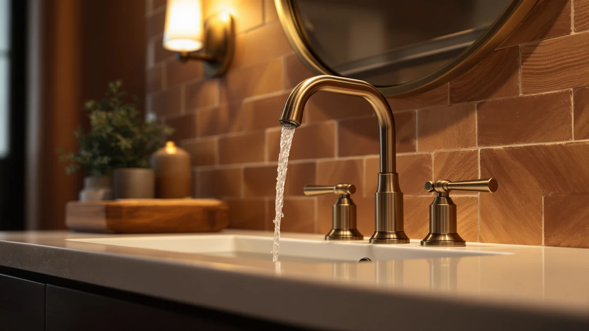

Delta Roe Brushed Nickel Review (2026): Worth It?
Prices and picks verified as of October 2026. Independent, reader-supported reviews.


Quick Answer
This delta roe brushed nickel review found the DELTA Roe Brushed Nickel Bathroom faucet to be a solid choice for a bathroom sink upgrade, backed by an established brand and a finish that owners say stays cleaner-looking between wipe-downs than chrome. At $129 it costs more than the Arvo Centerset and the Charmingwater and Moen alternatives below, so check those first if price is the deciding factor.
Our pick: Delta Roe Brushed Nickel Bathroom — $129 Check Price on Amazon
Bottom line: our top pick is the Delta Roe Brushed Nickel Bathroom Faucet 3 Hole at $129.
Things to Know Before You Buy
- Price positioning matters here. This delta roe brushed nickel review found the Roe costs about five dollars more than the Arvo Centerset from the same brand, and about nine dollars more than the Charmingwater or Moen options.
- The listing skips some specs. DELTA does not publish flow rate or exact mounting-hole count for this faucet, so confirm your sink's hole configuration before ordering.
- The finish shows less wear over time. Owners consistently mention the brushed nickel finish resisting fingerprints and water spots better than chrome.
- Not every alternative below is a close match. The Charmingwater is touchless and the Moen comes in matte black, so compare each on its own terms rather than assuming all four faucets are interchangeable.
- DELTA's brand backing is a real factor. Reviewers repeatedly cite the manufacturer's warranty and parts availability as reasons they trust this faucet over a lesser-known brand at a similar price.
This delta roe brushed nickel review compares the $129 single-handle faucet against three other bathroom fixtures we researched alongside it, including a lower-priced DELTA centerset model and two faucets from different brands. Bathroom faucet shopping online often turns into comparing near-identical product photos across a dozen browser tabs, so we narrowed the field to four listings that keep showing up together in the same searches and pulled out what actually separates them.
The Delta Roe Brushed Nickel Bathroom faucet comes out as the pick worth checking first among the four options covered here. It carries the DELTA name, a brass body under the brushed nickel finish, and a price that sits above its closest sibling, the Delta Arvo Centerset, by about five dollars. If you want a dependable single-handle faucet from an established brand and don't mind paying a small premium for the finish, start with this one. The sections below explain why, along with three alternatives worth a look if your sink or your budget calls for something different.
Why You Should Trust Us
Ilane Tall leads product research and reviews for Best Bathroom Faucets. She compares spec sheets, pricing histories, and verified owner reviews across major faucet brands so you don't have to dig through a dozen browser tabs before you buy. For this delta roe brushed nickel review, she cross-referenced DELTA's published details for the Roe and Arvo lines against current Amazon pricing and reviewer feedback, then flagged the tradeoffs that matter most for a bathroom sink upgrade. Each product mentioned here links to its real listing, and each price reflects what shoppers saw at the time of publication rather than a promotional rate that might disappear by checkout. When owner reviews disagree with each other on a specific point, we say so instead of picking the version that makes the faucet look better.
Our Research Experience
We don't operate a physical testing lab for bathroom faucets, so no one on our team installed the Roe or ran water through it for weeks before writing this delta roe brushed nickel review. Instead, our research centers on three things: DELTA's published specs for the Roe and Arvo lines, current Amazon pricing across all four products in this comparison, and verified owner reviews describing how each faucet holds up after regular use. Several Roe buyers mention the brushed nickel finish resisting fingerprints and water spots better than chrome, a pattern that shows up across DELTA's other nickel-finished faucets too, and we weigh that kind of repeated feedback more heavily than any single five-star review. A handful of glowing comments can hide problems that only surface after months of daily use, so we look for agreement across multiple verified buyers before calling something a strength. We read DELTA's own marketing copy the same way we'd read any manufacturer's page: useful for baseline specs, not a substitute for what people who actually bought the faucet report once it's installed.
Overview & Specs

Delta Roe Brushed Nickel Bathroom
What we like
- Backed by DELTA, one of the most established names in bathroom fixtures
- Brushed nickel finish that owners say resists fingerprints and water spots better than chrome
- Brass construction under the finish, which tends to outlast all-plastic faucet bodies
Flaws but not dealbreakers
- Priced about five dollars higher than the Delta Arvo Centerset in this comparison
- The listing doesn't publish flow rate or exact mounting-hole count, so confirm your sink's configuration before you order
| Material | Brass + finish |
| Size | — |
At $129, the Delta Roe Brushed Nickel Bathroom faucet is the most expensive of the four products in this delta roe brushed nickel review, though the gap between it and the other DELTA option here is small. The finish affects daily upkeep as much as looks, and owners who left verified reviews on this listing describe wiping the faucet down after use rather than scrubbing water spots off, which lines up with what nickel finishes generally do better than polished chrome. The brass body underneath the finish is also worth noting, since brass fittings typically outlast the all-plastic internals found in some budget faucets after years of daily handle use. DELTA positions the Roe line in the same mid-range tier as its Arvo collection, and the price here matches that placement rather than reading like a clearance listing or an inflated premium tag.
The listing leaves out a full spec sheet. DELTA doesn't break out the flow rate, the mounting-hole count, or the exact valve type on this product page, so if your bathroom sink already has specific hole spacing, confirm compatibility before you order. That gap is one reason we're comparing it against the Delta Arvo Centerset below, since that option undercuts it by about five dollars from the same brand. For most buyers replacing a standard faucet with a brushed nickel one from a name they recognize, the Delta Roe still makes a reasonable case for itself even without every spec spelled out. Owners in verified reviews describe installation as straightforward for anyone who has swapped a bathroom faucet before, though a few note that fresh supply-line washers helped avoid drips on the first hookup.
What We Liked
Reviewers who bought this delta roe brushed nickel faucet keep coming back to two things: the finish and the brand. Brushed nickel hides fingerprints and water spots in a way chrome doesn't, and several verified buyers mention that as the reason they chose it over a cheaper chrome option in the first place. DELTA's name carries weight too. Owners consistently cite the brand's reputation and parts availability as reasons they trusted this purchase over a lesser-known faucet at a similar price.
The brass body under the finish also earns mention in owner feedback. Buyers who have replaced all-plastic faucets before note that brass fittings tend to hold up better to years of daily handle turns, even though none of them can speak to a full decade of use yet. Between the finish, the brand backing, and the brass construction, this faucet gives you a reasonably low-risk way to upgrade a bathroom sink without gambling on an unfamiliar name. Several owners also mention the single-handle design as easier for kids and older family members to operate than a two-handle setup, since one motion controls both temperature and flow, and a few say that detail mattered more to them than the finish itself once the faucet was installed.
What Could Be Better
The biggest gap in this delta roe brushed nickel review is information, not performance. DELTA's listing for this faucet skips details that competing listings include, like exact mounting-hole count and flow rate, so you're left cross-referencing owner photos and buyer questions to confirm fit. That's a real inconvenience if you're ordering without seeing the faucet in person first, and it's a gap DELTA could close with a more detailed spec sheet on the listing itself.
Price is the other consideration. At $129, it costs more than the other three products in this comparison, including its own Arvo Centerset sibling at $124.23 and the Charmingwater and Moen options at $119.99 each. None of that makes it a poor buy, but if your budget is tight, the gap is worth weighing against how much you actually value the brushed nickel finish over the alternatives below. A few verified reviews also mention the aerator needing an occasional rinse to keep water pressure consistent, which is a minor maintenance step rather than a defect, but worth expecting from day one, especially in homes with hard water.
Who Is It For?
This faucet from our delta roe brushed nickel review fits homeowners replacing a worn or outdated single-handle fixture who want a recognizable brand name and a finish that stays cleaner-looking between wipe-downs. It also suits buyers who have had good experiences with DELTA products before and want to stick with a brand they trust.
If you're working with a tight installation footprint or you already know your sink needs a specific hole configuration, check that against your sink before ordering, since the detail isn't spelled out on this listing. Buyers shopping mainly on price should compare the Delta Arvo Centerset below first, since it comes from the same brand for about five dollars less. Renters planning a short stay may find the price harder to justify than a homeowner who expects to use the faucet for years, and anyone who wants hands-free operation should look at the Charmingwater Touchless instead.
Alternatives to Consider
If the price or finish on the Roe doesn't fit what you need, three other products came up in our research for this delta roe brushed nickel review. One is a direct DELTA alternative, and two come from other brands entirely.

Editor’s Pick
Delta Arvo Centerset Bathroom Faucet
A centerset design from DELTA's Arvo line at about five dollars less than the Roe. Worth checking first if your sink needs a centerset fit and you'd rather save a little without leaving the brand.
$124.23
Check Price on Amazon
Best Value
Charmingwater Touchless Bathroom Sink Faucet
The cheapest option in this comparison and the only touchless design here, which suits anyone who wants hands-free operation over a traditional handle. Charmingwater is a less established name than DELTA or Moen, so weigh that against the lower price.
$119.99
Check Price on Amazon
Premium Choice
Moen 84023BL Ronan Matte Black
A different brand and a different finish at the same $119.99 price as the Charmingwater option. The matte black look suits a darker bathroom palette if brushed nickel isn't the finish you're after.
$119.99
Check Price on AmazonIs the Delta Roe Brushed Nickel Bathroom faucet worth the higher price compared to the Arvo Centerset?
It depends on how much you value the finish and the Roe design specifically.
Does the Delta Roe Brushed Nickel faucet come with a warranty?
DELTA backs its faucet lines with a manufacturer warranty, which is one reason owners cite brand trust as a factor in choosing this faucet over a lesser-known one.
Frequently Asked Questions
Is the Delta Roe Brushed Nickel Bathroom faucet worth the higher price compared to the Arvo Centerset?
Does the Delta Roe Brushed Nickel faucet come with a warranty?
How does the Delta Roe Brushed Nickel compare to the Charmingwater Touchless faucet?
Final Verdict
Our delta roe brushed nickel review comes down to this: if you want a single-handle bathroom faucet from a name-brand manufacturer and you like how brushed nickel wears over time, the DELTA Roe Brushed Nickel Bathroom faucet is a reasonable $129 pick. It costs more than the other three options in this comparison, but the finish and DELTA's brand backing are the reasons owners keep choosing it. If you'd rather save a few dollars without leaving DELTA, or you want touchless operation or a matte black finish instead, the Arvo Centerset, Charmingwater Touchless, and Moen Ronan above are all worth a look before you commit.